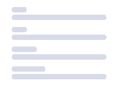

Remote Customer Service & Live Chat Associate
 Singapore
Singapore- 12–20 hours / week
- SGD $11–$15 / hour
Handle customer enquiries through chat, email and messaging.
BEST FIT FORPeople who are patient, organised and comfortable chatting with customers online.
We offer remote roles designed to fit around your schedule. Ideal for earning extra income alongside your primary job.
Apply NowJob Roles
Handle customer enquiries through chat, email and messaging.
Support daily operations by updating records, checking information and preparing simple reports.
Assist with marketing tasks such as preparing simple visuals, drafting captions and updating content calendars.
Support day-to-day coordination work such as tracking tasks, following up with stakeholders and keeping simple records up to date.
Support the recruitment process by helping to review applications, schedule calls and keep candidate records updated.
Help to look after basic social media and community activities, such as replying to simple questions, preparing posts using templates and keeping track of feedback.
Just drop your info through the form — and we'll get in touch to help you find the right fit!
Get In TouchApply Form
These part-time roles are designed to fit around your current commitments. Explore flexible remote opportunities you can do from home, based on your schedule and skills. Payments are typically made weekly, with daily payment options available for certain tasks based on their nature and completion.
Earnings are based on task completion and individual effort. Actual income may vary and is not guaranteed.
How It Works

Submit your personal information through the form for recruitment purposes only.
Our support team assists you in choosing suitable tasks via WhatsApp
Payments are typically weekly, with daily options available for some tasks based on completion.
We're here to support you — from interviews to task selection, even if you have a full-time job. Explore flexible gig, freelance, or part-time remote roles in customer service, admin & data entry, marketing & content support, operations & coordination, recruitment assistance, and social media or community support. Start browsing opportunities today.
Get StartedEarn extra income alongside your full-time job — no fixed hours required.
Training is provided to help you get started.
Just need an online device.
Build practical digital skills for long-term remote work success.
Why Choose Us
Find your fit in customer service, admin, marketing, operations, recruitment support, and social media roles.
Testimonials
“I appreciate the flexible scheduling of remote work, which allows me to earn income comfortably from home.”
“This is the perfect side hustle! I earn extra income while gaining valuable experience.”
“The part-time jobs here are amazing! I can work around my schedule and earn while learning new skills.”
FAQ